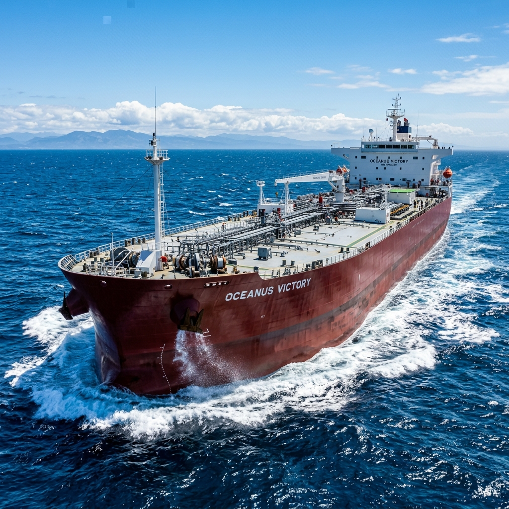

Operational Foundations
Established by the Papathomas family as shipowners and maritime operators, laying the groundwork for a platform built on deep operational expertise and long-term ownership values.

Formed a container shipping joint venture with GE Capital and participated alongside them and Carlyle in the $1.8bn Hapag-Lloyd transaction. Expanded into institutional shipping investments and large-scale vessel transactions. Established Nautilus, an institutional container shipping investment platform, with Goldman Sachs, OCH-Ziff and Eton Park.

Successfully managed and restructured investments through the financial crisis. Launched Synergy Marine Chartering to pursue counter-cyclical chartering opportunities and partnered with Euroseas across shipping investments and asset transactions.
Developed and expanded the Aframax tanker investment platform and invested across tanker, LR2 and LPG shipping opportunities. Executed active portfolio rotation through vessel acquisitions and monetizations, expanding relationships with global charterers, traders and institutional investors.
A disciplined investment approach across multiple shipping cycles has enabled Synergy to scale, reposition assets, and capitalize on market inflection points, without being exposed to market risk.